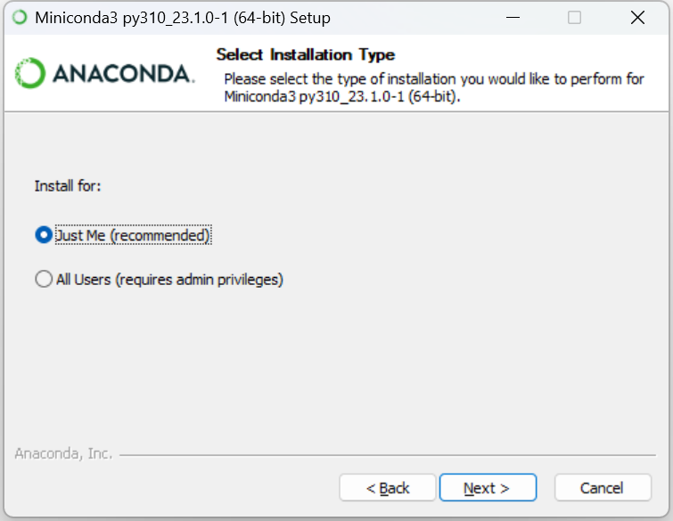
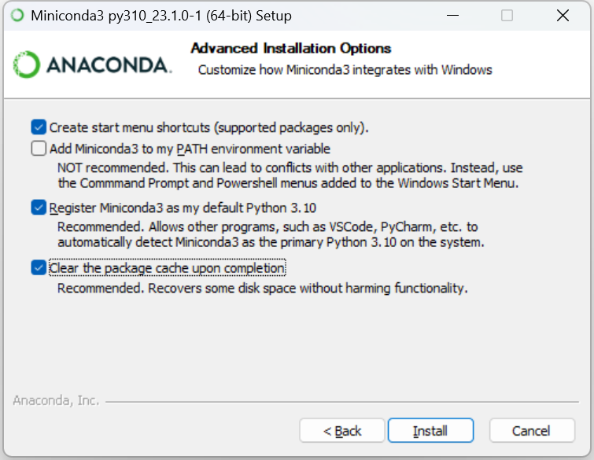

Chapter 0 安装 Installation#
安装清单#
Miniconda: https://docs.conda.io/en/latest/miniconda.html
Visual Studio Code: https://code.visualstudio.com/
Miniconda 安装配置#
下载 Miniconda#
Miniconda 下载地址：https://docs.conda.io/en/latest/miniconda.html
最新版 Miniconda For Windows 下载链接：
https://repo.anaconda.com/miniconda/Miniconda3-latest-Windows-x86_64.exe
Windows 下安装配置推荐#
Just Me (recommended)
Clear the package cache upon completion


修改 Powershell 执行策略（可选）#
在开始图标右键单击，选择 Windows PowerShell（管理员）
先输入下面的内容，并回车：
Set-ExecutionPolicy -Scope CurrentUser RemoteSigned
出现如下内容后，输入：A，回车：

最后在 Anaconda Powershell Prompt 中输入：
conda init
更换镜像源#
Pip 换源
Conda 换源
加快国内资源下载速度
校园网联合镜像站#
阿里巴巴开源镜像站#
https://developer.aliyun.com/mirror/
请避免使用代理，不合理的代理设置会导致下载失败
Conda 更换镜像源#
清华大学开源软件镜像站：https://help.mirrors.cernet.edu.cn/anaconda/
南方科技大学开源软件镜像站：https://help.mirrors.cernet.edu.cn/anaconda-extra/
在 Anaconda Powershell Prompt 中输入：
conda config --set show_channel_urls yes
在镜像站复制文本后，在 Anaconda Powershell Prompt 中输入：
notepad .condarc # 注意有个小点 "." 在 "condarc" 的前面
粘贴刚刚复制的文本，保存文件后关闭
最后在 Anaconda Powershell Prompt 中输入：
conda clean -i # 清除源缓存，以启用镜像源
PyPI 更换镜像源#
校园网联合镜像站：https://help.mirrors.cernet.edu.cn/pypi/
复制文本后，在 Anaconda Powershell Prompt 中粘贴运行即可：
# 设置 PyPI 镜像源
pip config set global.index-url https://mirrors.cernet.edu.cn/pypi/web/simple
课程环境搭建#
创建与激活 Conda 环境#
创建 Conda 环境
conda create -n Datawhale python=3.10 # conda 环境创建
其中 -n 代表创建的环境名称，这里是 Datawhale，并指定 Python 版本为 3.10
激活刚刚创建的 Conda 环境：
conda activate Datawhale # 激活 Datawhale 环境，不同环境的 Python 包版本不同！
如果需要删除某个 Conda 环境：
conda deactivate # 退出该环境
conda remove -n Datawhale --all # 删除整个环境
Pip 安装与展示#
Pip 安装课程所需第三方库
pip install jupyter
在指定路径输入：
jupyter-notebook # 会自动跳转到浏览器
结束学习时使用：
Ctrl + C # 关闭 Jupyter Notebook 服务
安装清单#
数据挖掘：
scikit-learn
numpy
pandas
tqdm
lightgbm (数据挖掘模型)
CV：
nibabel
pillow
Conda 安装与展示#
首先在 Anaconda Powershell Prompt 中输入：
nvidia-smi # 查看当前 GPU 支持的最高 CUDA 版本

Pytorch 安装： https://pytorch.org/get-started/locally/
conda install pytorch torchvision torchaudio pytorch-cuda=11.8 -c pytorch -c nvidia
PaddlePaddle 安装：https://www.paddlepaddle.org.cn
conda install paddlepaddle-gpu==2.4.2 cudatoolkit=11.7 -c Paddle -c conda-forge
CUDA 验证#
在 Anaconda Powershell Prompt 中输入：
ipython # 交互 Python 运行环境
使用 exit 或 exit() 来退出 IPython
PaddlePaddle:
>>> import paddle
>>> paddle.utils.run_check()
正确输出：
PaddlePaddle works well on 1 GPU.
PaddlePaddle is installed successfully! Let's start deep learning with PaddlePaddle now.
Pytorch:
>>> import torch
>>> torch.cuda.is_available()
正常输出：
True
云端环境的使用#
百度飞桨 AI Studio https://aistudio.baidu.com/aistudio/index
阿里天池 PAI DSW https://tianchi.aliyun.com/notebook-ai
Kaggle https://www.kaggle.com/code
Google Colab https://colab.research.google.com/
Sagemaker Studio Lab https://studiolab.sagemaker.aws/